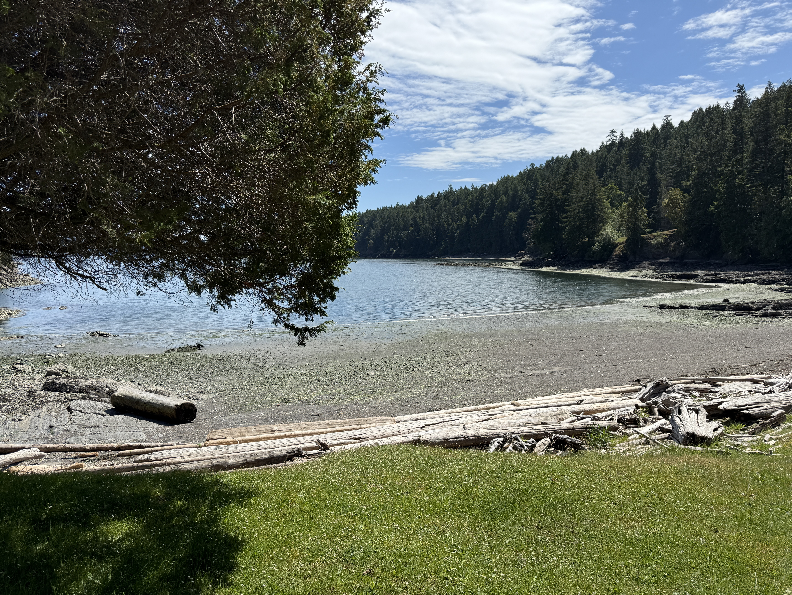
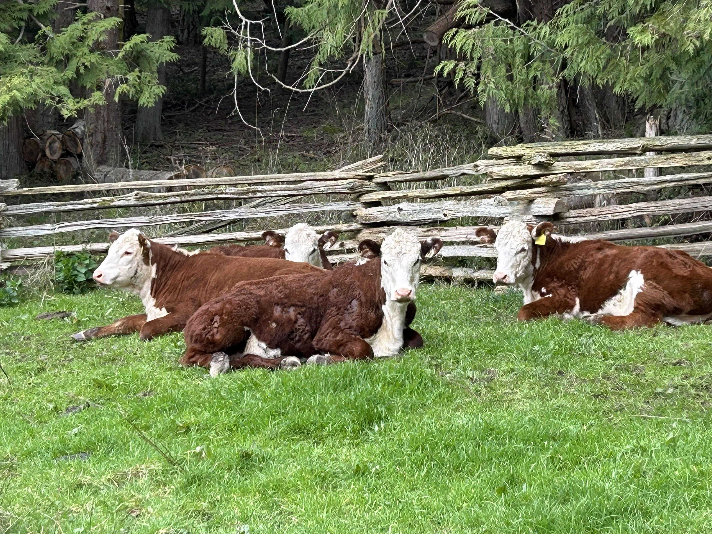

Now Hiring · Prevost Island · Southern Gulf Islands, BC
A permanent position on a century-old island farm.
A life worth living.
About the Island
Prevost is one of the smaller southern Gulf Islands — approximately 1,600 acres in total, with the farm itself covering around 1,200 acres of forest, field, and shoreline. There is no ferry service, no public roads, and no through traffic. Access is by boat only, a twenty-minute crossing from Ganges on Salt Spring Island. The outside world stays outside.
First homesteaded in 1874, the land has been farmed by the de Burgh family since 1925 — three generations of quiet, committed stewardship. The farm covers approximately 1,200 acres of the island, with the remainder made up of National Park land and a handful of small private settlements. Beyond the farm boundaries, miles of hiking trails wind through undisturbed forest, and over ten miles of rocky shoreline await exploration by kayak. Herons fish the shallows. Eagles patrol the thermals. Seals haul out on the rocks below.
The farm's fields and the family's care sit at the heart of a largely undeveloped island. It is a peaceful haven — and for the right people, it will feel immediately, undeniably like home.
View Prevost Island on Google Maps

What to Expect
The farm runs a flock of North Country Cheviot sheep and a Hereford cow-calf operation. The animals are central to everything — their welfare, their seasons, and their rhythms shape the farm year. Lambing and calving are the heartbeat of it all.
Hay is grown entirely on-farm — 35 to 55 acres cut and baled each year to feed the cattle and sheep through the winter. Fields are rested, ploughed and reseeded as needed, with soil health and long-term productivity always in mind. Pastures are managed with care for the animals and the land alike. Water is drawn in part from a beautiful on-farm pond — alive with red-winged blackbirds and dotted with water lilies — a reminder that sustainable farming and thriving nature go hand in hand.
The dock is your gateway to the world — six miles from Ganges, twenty minutes by boat. Salt Spring has everything the farm and households need. The crossing itself, on a calm morning, is one of the finest commutes on earth.
Accommodation is Stone House — a 1930s farmhouse known by name to everyone on the island. It is rustic and full of character: old plaster walls, wood heat, a propane shower, and solar power with battery storage for lights and a fridge. Livable, warm, and in a setting that most people only dream about — a low grassy bank at the head of a quiet bay, a big beach out front, and Pender Island framed in the window.
Miles of trails wind through the National Park land. Kayaking the ten-mile shoreline reveals coves, cliffs, and creatures that most people never see. The island is wild in the best sense — and you will be part of it.
The de Burgh family is committed to caring for this land and its wildlife with the same dedication they bring to the farm. This is a philosophy of living well and leaving things better than you found them.
The Position
The farm needs two people — ideally a couple, both able and willing to work. Hours are flexible through most of the year, but at haying time, lambing, and calving, the work demands full presence and full commitment. This is honest, physical, deeply satisfying work in one of the most beautiful places in British Columbia.
The owners have farmed this island for three generations and are deeply committed to the land, the animals, and the quality of what they produce. They are looking for people who share that commitment — calm, grounded, and genuinely at home in a wild and working landscape.
The work includes
Who you are
A summer trial position is possible while we seek a long-term match. We would rather take the time to find the right people than settle for the wrong fit.
The Island in Motion
A few glimpses of what daily life on Prevost looks like — the farm, the animals, the water, and the land.
Gallery
Apply
If this sounds like the life you've been looking for, we'd genuinely love to hear from you. Please fill in the form below — tell us about your background, your experience with animals and machinery, and most importantly, what draws you to this kind of life. We're not looking for the longest resume. We're looking for the right people.